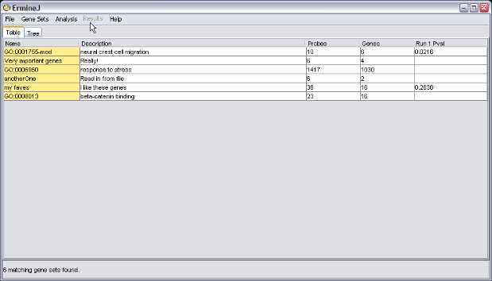
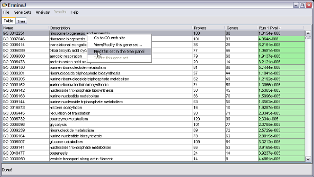

ErmineJ has several facilities to make it easier to locate gene sets of interest
In the main window, the search box appears in the bottom of the screen. Click or press Ctrl-f to activate it. Press Ctrl-f again to reverse the effect of the search if you have already performed one.
To use it, type text you want to search for and press "Enter" on your keyboard example we searched for "synapse". To clear the filtering, type "Ctrl-f" or clear the text in the field and press enter again.

Alternatively, you can search by gene. Check the "Search genes" box to activate this feature. Here is an example of searching for "snap25". All gene sets containing this gene are displayed. Note that you must enter the official gene symbol (capitalization doesn't matter).

To clear the filtering, type "Ctrl-f" or clear the text in the field and press enter again.
In the treeview, the results of a search are indicated by greying out
all gene sets that don't meet criteria.
The key "ctrl-U" (or the corresponding menu item) toggles the display between showing all gene sets and just the user-defined gene sets. This is useful because the user-defined gene sets can easily get lost among all the others. You can combine this with a search using the box at the bottom of the window.
Similarly, in the tree view, there is a separate subtree for user-defined ("Custom") gene sets, listed first.

It can be hard to find a gene set in the tree because they can be anywhere in the hierarchy. Because searches generally can yield multiple gene sets, currently the search function doesn't work the way you might think in the tree view. Instead, locate the gene set you want in the table, and then use the context-specific menu (right-click or option-click) to choose the "Find this set in the tree panel" option.
This switches you to the tree view and highlights the gene set you requested.
